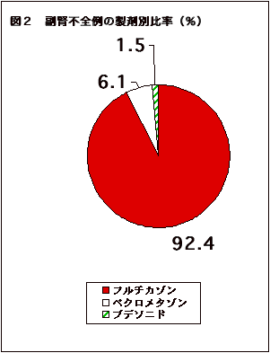

2002年10月の独立行政法人問題とイレッサ問題にはじまり、2003年５月以降のプロトピック軟膏の問題では究極の非営利活動に精を出しすぎ日常的業務に支障をきたし、速報版を中断していましたが、ようやく回復の兆しが見えてきましたので、インターネット速報版を再開いたします。まずは、『薬のチェックは命のチェック』No14（4月20日発売予定）の記事「喘息用吸入ステロイド剤フルタイド(一般名フルチカゾン)は危険」をお届けします。
『薬のチェックは命のチェック』12号（p72）の質問箱で扱った、大村医師からの質問は「ステロイド外用剤は危険であるのに、喘息にはステロイド吸入剤が第一選択となっている。どうちがうのか」というものでしたが、それには「今はまだ、害よりは益の方が大きいが、近いうちにも、害の方が心配になる可能性があります。」と答えました。
ところが早速、大きな害があることがわかりました。といっても、ステロイド吸入剤すべてではなく、特定のもの。具体的にはフルチカゾン（商品名フルタイド）だけが危険ということです。
当センター正会員の小児科医（高松勇医師）から、ある論文（Toddら,Arch Dis Child 2002;87:457-461）の解釈について相談がありました。その文献は驚くべきものでした。
30年来ステロイド吸入剤で副腎が働かなくなる「副腎不全」の報告は皆無に近いものでしたが（文献的には2件のみ）、最近４件の追加症例が発見されたので、英国で全国調査が行われました。その結果、ステロイド吸入剤を使用していて急性副腎不全（囲み参照）になった例が、英国全体で33人（小児28人、成人5人）報告され、その大部分がフルチカゾンによるものでした。
『薬のチェックは命のチェック』やTIP誌ではまだ扱っていませんでしたが、フルチカゾンが「危険」という根拠を端的に表しているため、ちょうど喘息薬について執筆を依頼されていた「週刊金曜日2004年2月13日号」に書きました。
『薬のチェックは命のチェック』やTIP誌の読者の医師からその根拠論文を教えて欲しいとの要望もありましたので、『薬のチェックは命のチェック』14号（４月20日発行予定）に一般向けを、また、専門家向けにはTIP誌3月号（3月28日発行）にその根拠について解説しました。
喘息治療における吸入ステロイド療法という、喘息治療の根幹に関わる問題ですから、両記事をインターネット速報版に公開いたします。専門家の方は、合わせて、TIP誌もご覧ください。
まず図１を見てください。ステロイド剤の処方枚数は、従来からのステロイド吸入剤であるベクロメタゾン製剤（日本での商品名はアルデシン、ベコタイドなど）が71％と圧倒的に多く、フルチカゾン製剤はわずかに13％でした。
|
 |
| フルチカゾンの処方枚数は13％だが、急性副腎不全患者の９４％（33人中31人）がフルチカゾンを使用。フルチカゾンによる急性副腎不全の起こりやすさは、ベクロメタゾンの80倍以上。常用量の範囲内でも危険。Toddら、,Arch Dis Child 2002; 87: 457-461より、医薬ビジランス研究所で作成（フルチカゾンとブデソニド併用した1人はそれぞれに0.5人ずつとして計算）。 | |
ところが、図２のように、急性副腎不全の患者は33人のうち、31人（94％）がフルチカゾンを使用していたのです（うち一人はブデソニドも使用。そこで、図２の人数はフルチカゾン30.5人、ブデソニド0.5人として計算し、92.4％と1.5％と表示しましたのでご注意ください）。ベクロメタゾン剤の使用者ではわずか２人（6.1％）でした。小児の28人中27人（96％）がフルチカゾンを使用していました。
フルチカゾンによる急性副腎不全の起こりやすさは、ベクロメタゾン剤に比較すると、80倍以上と計算できました。なお、ブデソニド、商品名パルミコートの危険性は、ほぼベクロメタゾンと同じでした。
フルチカゾン使用者の使用量は小児で１日500から2000（平均980）マイクログラム、成人では1000〜2000（平均1380）マイクログラムでした。大人では1日最大800マイクログラム、小児では200マイクログラムまで許容量とされていますから、副腎不全患者の使用量は常用量を超えています。
しかし、小児では許容量範囲内の176マイクログラム/日でも6人中1人は、早朝のコルチゾル（人体内の副腎皮質ホルモン）の濃度が低下しているという別の報告もあります。したがって、非常に大量ではじめて副腎不全が起きるのではなくて、常用量の範囲内でも起きうるということ、しかも極めてまれというわけではなく、長期に使用すればかなりの人の副腎機能に影響がありうるということを示しています。
むしろ、ベクロメタゾン剤やブデソニド（商品名パルミコート）の添付文書には副腎抑制の注意は記載されていませんが、フルタイドには、「全身性の作用（副腎皮質機能の抑制、小児の成長遅延、骨密度の低下、白内障、緑内障を含む）が発現する可能性がある」と書かれています。常用量を超える大量、との断り書きはありません。したがって、メーカー自身「常用量内で生じうる」ということを、添付文書上でも認めているのです。
薬害エイズやベロテックの再現はゴメンだ
最も問題と思うことは、メーカーや、医師、特に喘息専門医の姿勢です。問い合わせてきた医師によると、｢週刊金曜日に書いてあった記事の根拠はあるのかとメーカーに問い合わせたら、『ない』といって持ってこない。根拠論文を教えて欲しい。｣というものでした。また、問い合わせてきた患者さんの一人は、「喘息専門医にかかっているが、『そのような危険性はない』といって取り合ってくれない。喘息に関して著書もある別の何人かの専門医に当っても同じだった、先日初めて、大量では起こりうるかもしれないが、常用量では問題ないということでした。」といっていました。
これらを総合して考えると、結局メーカーは添付文書には一応この情報を記載してありますが、医師や患者さんに十分理解されるように配慮して知らせていないために、一般内科医や小児科医だけでなく、喘息専門医を自認する専門家にも知られていないことです。薬害エイズの時、専門医が率先して非加熱製剤を処方し、血友病患者をエイズにかからせた構図、ベロテックエロゾルを心臓に優しいとして多数の喘息患者を突然死させていた構図と重なるものがあるといえばいい過ぎでしょうか。
フルタイドを使用している人は、あわてて他のステロイド吸入剤に変更しないでください。まず、必ず、早朝の血中コルチゾル濃度を測定してもらいましょう。その上で、低下しているようなら、徐々に減量すること、場合によっては内服のステロイド剤を使用するなど、急性副腎不全の症状が出ないように注意しながら、他の薬剤に切り替えてもらってください。
ボーダーラインにある人は、さらに詳しい検査を受け、副腎の抑制があるようなら、慎重に減量し、他の安全なステロイド吸入剤に変更してもらってください。 正常な人もいつまた副腎機能が抑制されるかもしれません。他の安全なステロイド吸入剤に変更することをお勧めします。
フルチカゾンは、相互作用の最も起こりやすい酵素（CYP3A4）によって代謝されるので、同じ酵素で代謝される薬剤と競合して、代謝が抑えられて蓄積し、血中濃度が持続しやすくなります。喘息でしばしば併用されるプランルカスト（商品名オノン）や、アレルギー性鼻炎にも用いられる抗ヒスタミン剤ロラタジン（商品名クラリチン）、抗生物質のクラリスロマイシン（商品名クラリス、クラリシッド）などが相互作用を起こします。その上に、抗ヒスタミンや去痰剤のムコダインなどは、それ自体が低血糖を起こしやすいので、フルチカゾンでステロイド依存になっている場合に抗ヒスタミン剤などは続行してフルタイドだけを急に中止すると、低血糖になりやすいことが心配になります。
メーカー（グラクソ・スミスクライン）に記事に対する意見を求めましたが、ただ「見解が異なる。同意しかねる」「中立性に疑問がある」といったコメントがあっただけで、具体的な事実や、データの解釈に対する問題点の指摘はありませんでした。
ただ、両誌記事執筆のためにメーカーに資料を求めたところ、フルチカゾン製剤の承認の根拠になった資料として、多数の社内資料を含む資料が送付されてきました。その点、プロトピック軟膏の藤沢薬品や、イレッサでのアストラゼネカ社の資料開示拒否の姿勢とは異なり、きわめて透明性が高いという印象をもったことは特筆しておきたい。ただ、多くの医師や患者からの問い合わせに対してもこの姿勢を貫いてほしいものです。
副腎皮質から出るステロイドホルモン、なかでもその代表は「糖質コルチコイド」。これをふつうステロイドといっている。『薬のチェックは命のチェック』誌9号（ステロイド）で詳しく説明したように、ステロイドはアドレナリンの次に命の維持に大切なホルモン。
ステロイドを薬として長期間使うと自分の急性副腎不全から出す必要がないために、薬を使用しなくなるとステロイドホルモンが作れず、血圧が下がりショック状態になり、血糖が下がり、昏睡状態に陥りケイレンを起こす。
英国でフルチカゾンなどによって起きた急性副腎不全では全例に低血糖が現れ、４人の子どもは、その原因が3か月から2年間（平均0.9年間）不明であった。吸入でも急性副腎不全が起きることを知らなければ、医師も診断できないということを意味している。
| 小児 | 成人 | |
|---|---|---|
| 男性･女性 | 17/11 | 3/2 |
| 平均年齢 | 6.4歳(3.3-10) | 41歳（18-80） |
| 発見時の症状 | ||
| 急性低血糖症 | 23 | 1 |
| 意識レベル低下または昏睡 | 13 | 0 |
| 昏睡＋ケイレン | 10 | 1 |
| 知らぬ間に進行 | 5 | 4 |